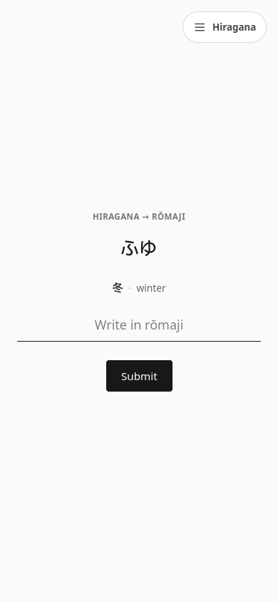
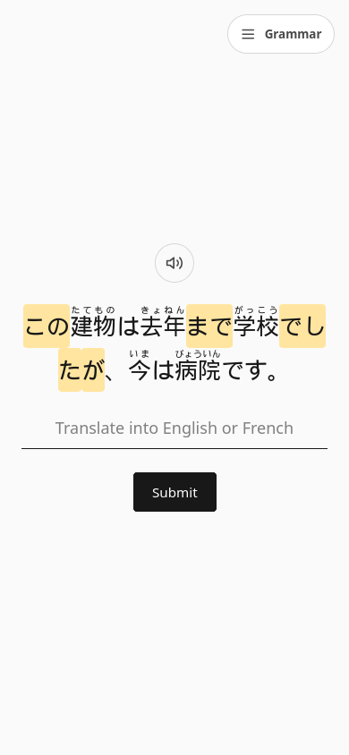

Practice several skills together.
Each grammar sentence also exercises its vocabulary, conjugated forms, and kana. You meet these skills together, as they are used in Japanese.
A calmer way to learn Japanese
Turn “I want to learn Japanese” into a daily practice. Build the foundations, use what you learn, and come back to it just when you need to.
No account. No ads. Just your next small step.
ChakuChakuSteadily. Surely. One step at a time.
What does this word mean?
A little word you’ll use every day.
Go ahead, try it. This preview won’t change your progress.
From your first あ to your next chapter.
The method
Grammar in sentences. Kana in real words. ChakuChaku schedules grammar points for review, then lets you practice them in sentences that also bring vocabulary, conjugation, and kana back into play.
Each grammar sentence also exercises its vocabulary, conjugated forms, and kana. You meet these skills together, as they are used in Japanese.
Spaced repetition tracks each grammar point in a sentence. When a point is due, the app selects a sentence that uses it, so you practice the point in context.
Hiragana practice uses existing words. With ねこ (“cat”), you practice both ね and こ while reading a word that means something.
Review を in 水を飲みます and you also meet “water”, the polite form of “drink”, and the kana in the sentence. Each exercise is a chance to bring those skills together.
The building blocks
Start with the scripts, connect words to meaning, and build sentences of your own. Six connected practice areas, with room to grow from N5 into N4.
Get comfortable with Japanese sounds and the everyday phonetic script, one word at a time.
Read loanwords and foreign sounds with practice that connects katakana, hiragana, and rōmaji.
Learn characters through words, with visual mnemonics that connect shapes, meanings, and readings.
Go from Japanese to meaning and back again. Learn to understand a word and find it when you need it.
Explore sentence patterns, inspect words with helpful hints, and translate in both directions.
Practice how verbs and adjectives change, from polite forms to negatives, past tense, and beyond.
Put it all together
Step into short Japanese stories with furigana, word meanings, and sentence audio. Check your understanding with questions, at your own pace.
Find your first story今日は、いい天気です。
新しい一日が始まります。
Your Japanese, to go
A few words on the train. A sentence over coffee. Bring ChakuChaku to your iPhone and make the moments in between a little more Japanese.
Prefer your browser? Try the web app →


Made for real life
No account, ads, or analytics. Your progress lives on your device, with backup and import when you need them.
Study on the web or iOS. The web app works offline after loading; audio becomes available offline once you’ve played it.
Learn with English or French explanations. Adjust reading hints, audio, and the pace of new material to suit you.
Before your first step
A few answers, so you can get straight to learning.
Yes. Begin with Hiragana, then explore Katakana and everyday vocabulary. You can choose each practice area yourself, set your study level, and use a gentle pace for new material. ChakuChaku is a practice companion; a textbook, class, or conversation practice can complement it.
Yes. The web app is free, with no account, advertising, or subscription required. The project is open source. An optional grammar autocorrection feature uses your own API key and may incur costs with the provider; it isn’t needed for normal practice.
The curriculum is organized around beginner Japanese, with N5 and N4 material. It’s useful whether you’re working toward an exam or building a foundation for everyday Japanese. It isn’t a mock exam or a guarantee of passing the JLPT.
Progress is saved on the device and browser you use. You can export a backup in Settings and import it on another device. There is no automatic cloud sync, so keep a backup before clearing browser data or changing devices.
There’s a word for steady progress.
A character today. A sentence tomorrow. See where a little Japanese can take you.